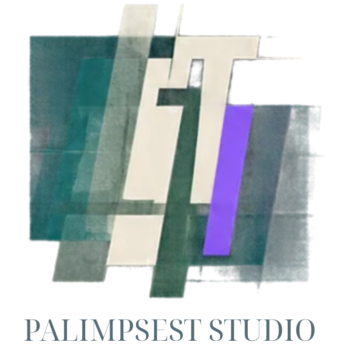

Изследвания
Лични истории, общности и културни практики чрез теренна работа и интервюта.
→
„Палимпсест“ събира, съхранява и представя лични и общностни истории чрез изследвания, документално кино, дигитални архиви и съвременно изкуство.
Палимпсест работи на пресечната точка между култура, изследване, документална практика и съвременно изкуство. Изслушваме хора и общности, събираме следи и търсим форми, в които те могат да продължат да живеят.
Пазим оригиналните свидетелства, но оставяме място за самостоятелна художествена интерпретация. Някои практики се предават. Други се променят. Трети съзнателно оставяме зад себе си.
Лични истории, общности и културни практики чрез теренна работа и интервюта.
→Събираме, описваме и съхраняваме документални материали и лични свидетелства.
→Филми, фотографски серии, изложби и авторски произведения с независими творци.
→Колекции, мултимедийни проекти и интерактивни форми за културно съдържание.
→Проекти, в които изследването не е само метод, а начин да видим настоящето по-внимателно.
За професиите, труда и променящите се професионални идентичности в малки български градове.
↗Градски пространства, лични спомени и историите, свързани с тях.
↗Миграция, семейна памет и чувството за принадлежност.
↗„Научено без думи“ изследва знанията, навиците, ценностите и начините на поведение, които се предават между поколенията чрез ежедневното общуване.
Интересуват ни както практиките, които хората запазват, така и онези, които решават да променят или оставят зад себе си.
Търсим пълнолетни хора от България и Гърция, които искат да разкажат за знания, навици или отношения, предадени между поколенията.
Кандидатстването е от 10 ноември до 20 декември 2026 г. Участието е безплатно.
Процедурите за реално участие и разрешение за публикуване на лични материали ще изискват отделно информирано съгласие.
Първата дигитална колекция на „Научено без думи“ е планирана за септември 2027 г. Тя ще представя подбрани свидетелства на български, гръцки и английски език.